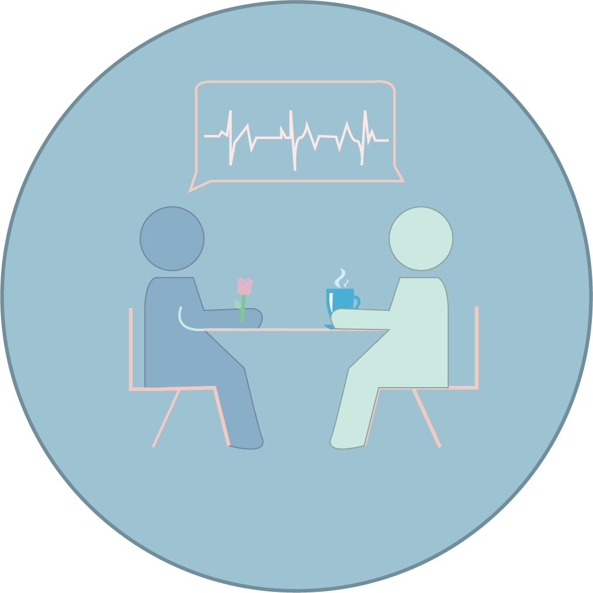
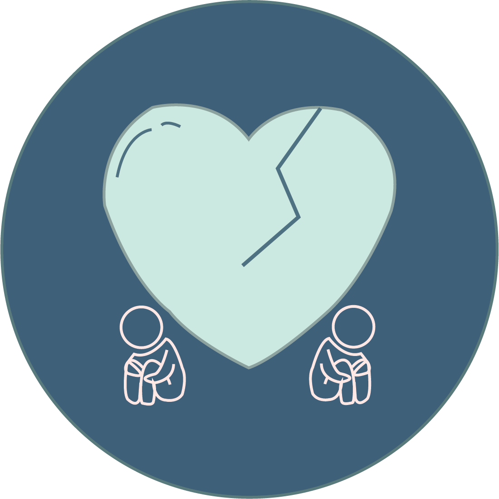
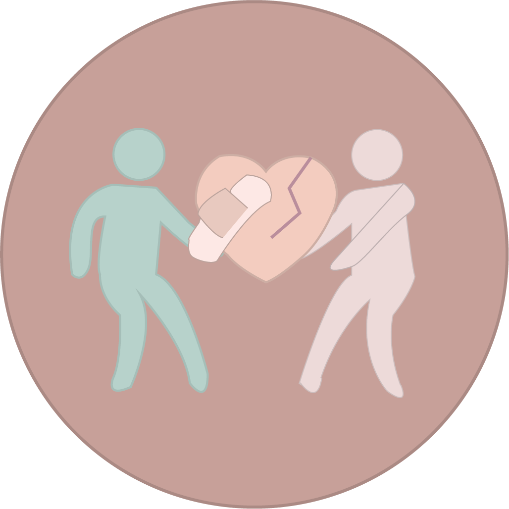
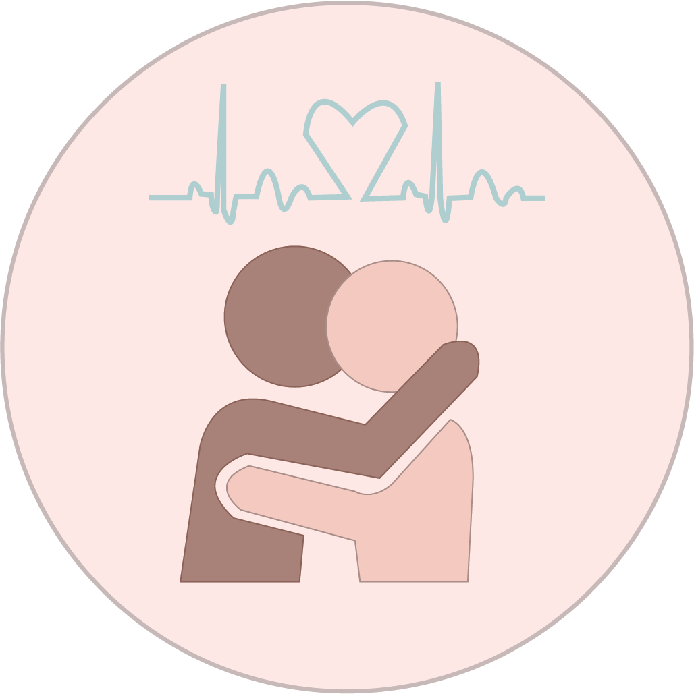
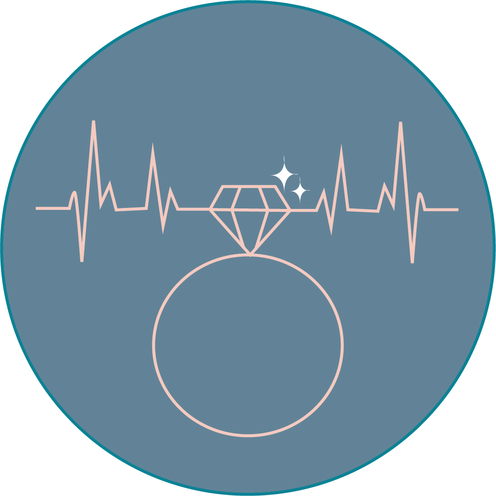
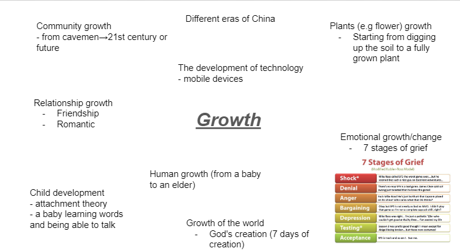
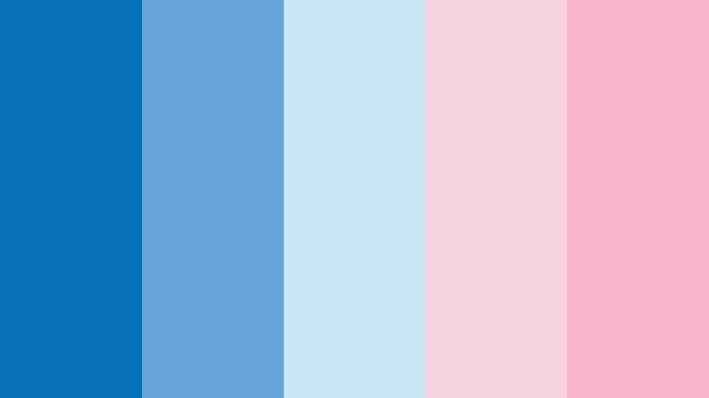

I created nine unified and responsive graphic icons. These 2D-designs of icons have a general theme of “growth”.
I brainstormed many ideas relating to the prompt of “growth” and eventually decided on the topic of “relationships”. My idea behind these icons is essentially the growth of relationships from love at first sight --> getting together --> fighting --> making up --> getting closer --> lastly getting married. (of course, that is not what I believe all relationships should conclude at, however it was a nice way to end the icons) The nine icons were created with Adobe Illustrator and represent the general process of how a relationship progresses.

During the planning process for my icons, I created different versions for each stage of relationship. My designs were inspired by different websites such as https://thenounproject.com/. The decision making for my colour scheme was hard. I was deciding between the options of pastel pink and blue or a yellowy-creamy colour. I understand that pink and blue are the stereotypical gender colours for a boy and girl. While the yellowy-creamy colour is known to be gender neutral. I believe one of these colours would be great for my icons as I want to include romantic relationships in all ways. I eventually decided to use the pink and blue colour theme as I generally really like the colour scheme but it also fits with my icon designs. As pink and blue is a very straightforward way of suggesting gender. Although I don't like the stereotypical typical colours that represent the male and female.

The audio corresponds well with the visual design. Although some of the audio is slightly a little long, they represent the icons well. I particularly like the ring icon. The visual is a design of a ring which represents marriage and I have also incorporated the idea of heart beat. The sound of the icon, “ding” is short and crisp which I believe is a nice addition to the icon.
Despite rethinking and redesigning my icons many times, overall, I enjoyed creating these designs and really like my concept and creativity. If I do get a chance to redesign my icons, I may consider creating a new design style (drawing the characters differently) as well as using a different colour scheme.